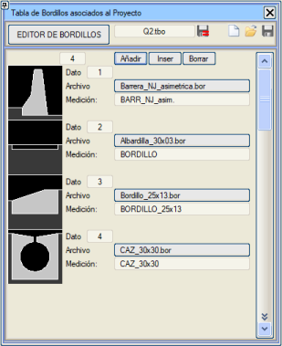
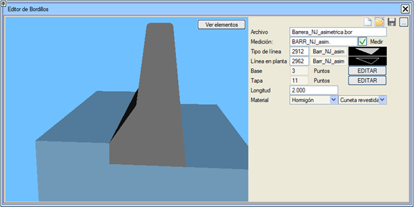

| |
|
BORDÜR TABLOSU
|
Bu menüye erişmek için Düşey Güzergah > Eklentiler > Bordür Tablosu yolunu izlemeliyiz. Bu diyalog kutusu, proje eksenleri tarafından kullanılacak olan bordür, bordürlü hendek, New Jersey bariyer vb. tipindeki elemanları seçmeyi sağlar. Bir bordür yüklenirken, kütüphane dosyası seçicisi, seçilen bordürü açmaya gerek kalmadan önizlemesini gösterir. 
Bu diyalog kutusunun ayrıca bir aracı vardır: Bordür Editörü, mevcut elemanları değiştirmeye veya yeni elemanlar oluşturmaya olanak tanır. Üç noktalı kutucuk aracılığıyla farklı kütüphanelere kaydetme seçeneği mevcuttur. 
Bu elemanlar kütüphanede .bor uzantılı dosyalarda saklanır ve şunları içerir:
Bordür tablosu .tbo uzantılı bir dosyaya kaydedilmelidir. |